Creates a plot of the genetic map in an object of S3 class gData. A
plot of the genetic map showing the length of the chromosomes and the
positions of the markers in the genetic map is created.
Usage
# S3 method for gData
plot(x, ..., highlight = NULL, title = NULL, output = TRUE)Arguments
- x
An object of class
gData.- ...
Not used.
- highlight
A data.frame with at least columns chr and pos, containing marker positions that should be highlighted in the plot. If a column "name" is present that is used for annotation, otherwise the highlighted markers are annotated as chr\@pos#'
- title
A character string, the title of the plot.
- output
Should the plot be output to the current device? If
FALSE, only a ggplot object is invisibly returned.
Examples
set.seed(1234)
## Create genotypic data.
geno <- matrix(sample(x = c(0, 1, 2), size = 15, replace = TRUE), nrow = 3)
dimnames(geno) <- list(paste0("G", 1:3), paste0("M", 1:5))
## Construct map.
map <- data.frame(chr = c(1, 1, 2, 2, 2), pos = 1:5,
row.names = paste0("M", 1:5))
## Compute kinship matrix.
kin <- kinship(X = geno, method = "IBS")
## Create phenotypic data.
pheno <- data.frame(paste0("G", 1:3),
matrix(rnorm(n = 12, mean = 50, sd = 5), nrow = 3),
stringsAsFactors = FALSE)
dimnames(pheno) = list(paste0("G", 1:3), c("genotype", paste0("T", 1:4)))
## Combine all data in gData object.
gData <- createGData(geno = geno, map = map, kin = kin, pheno = pheno)
## Plot genetic map.
plot(gData)

## Plot genetic map. Highlight first marker in map.
plot(gData, highlight = map[1, ])
